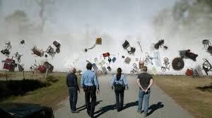

YouTube
Twitter
Documentation sur la série "Under the Dôme"
Accueil
Synopsis
Médias
Photos
Vidéos
Personnages
Contact

Lors de l'évènement électromagnétique du dôme
Photo suivante >>
<< Photo précédente